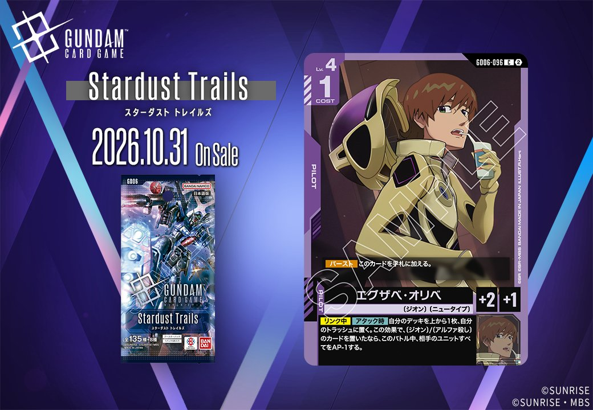
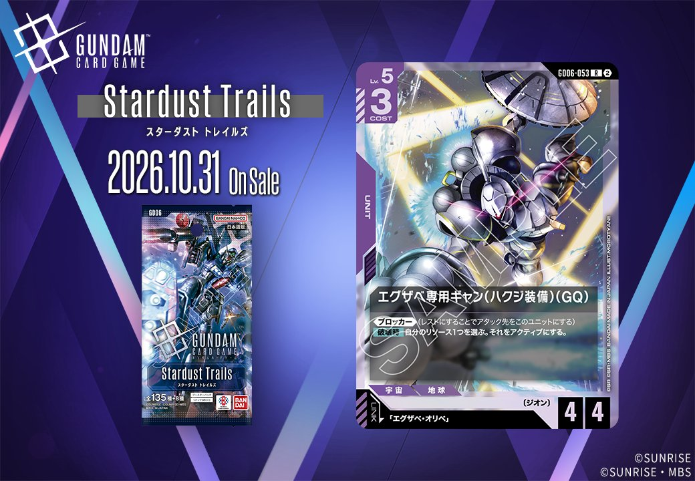
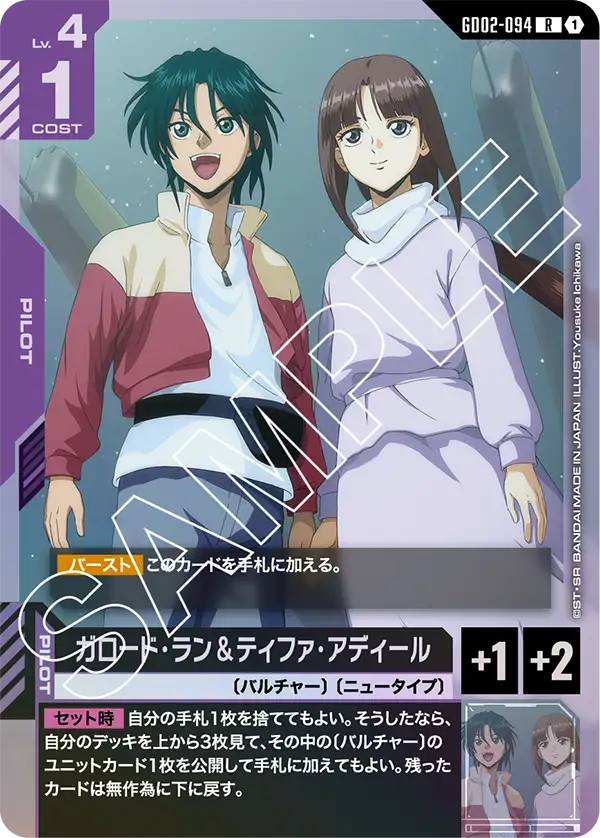
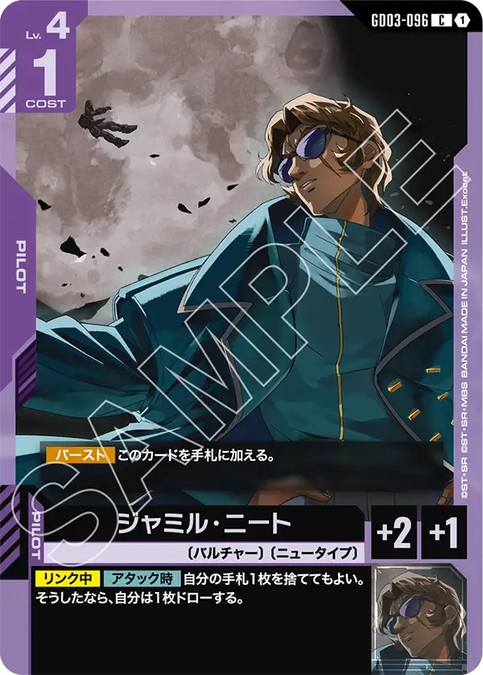
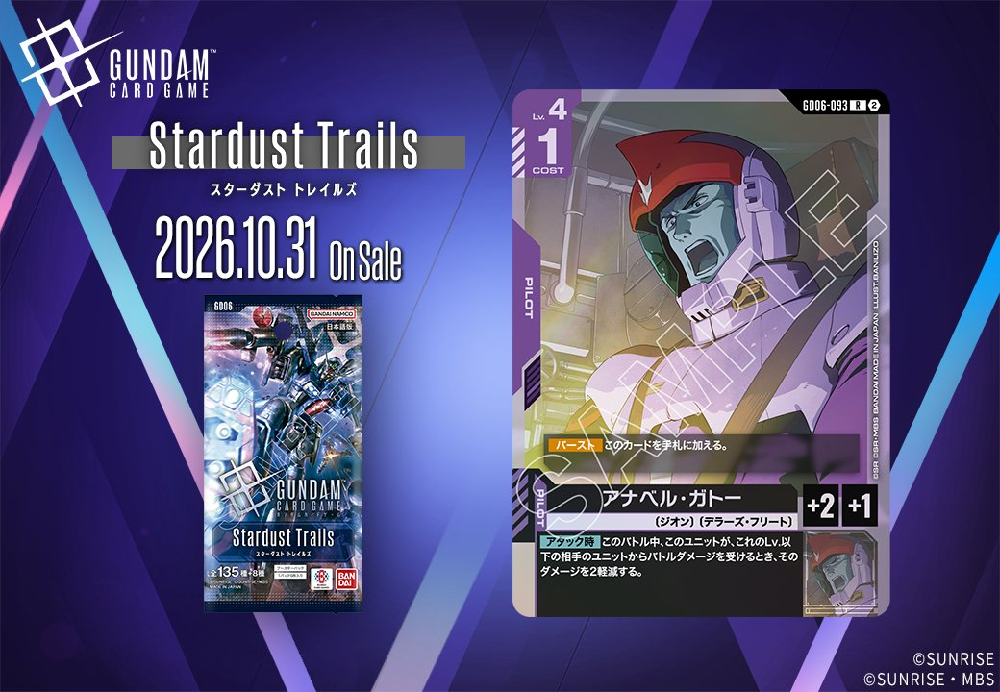
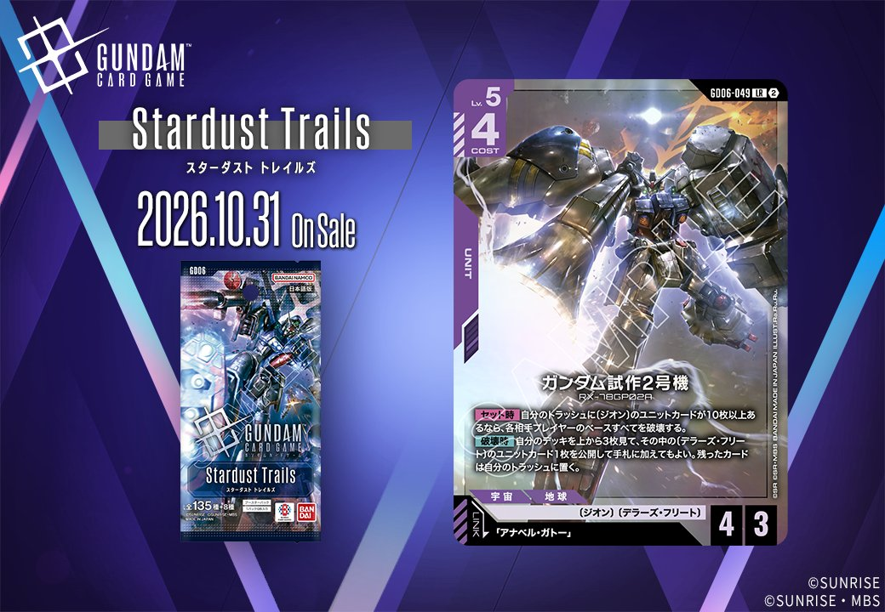
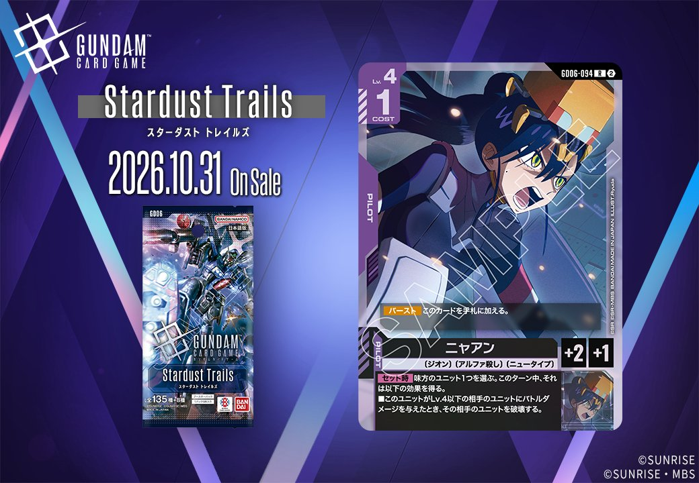

GD06「Stardust Trails」から、2026年10月31日発売の新カード2枚が公開されました。紫のUNIT「エグザベ専用ギャン(ハクジ装備)(GQ)」(GD06-053)はリンク条件に「エグザベ・オリベ」を指定しており、その条件に当てはまる紫のPILOT「エグザベ・オリベ」(GD06-096)も同日に公開されています。同日公開のUNITとPILOTがリンクで結ばれるこの組合せは2枚とも紫で、同じ色の中だけでリンク条件を満たす相手をそろえられます。

エグザベ・オリベ (GD06-096)
| 色 | 紫 | タイプ | PILOT |
| Lv | 4 | コスト | 1 |
| 補正 AP | 2 | 補正 HP | 1 |
| 特徴 | 〔ジオン〕、〔ニュータイプ〕 | ||
効果: 【バースト】このカードを手札に加える。【リンク中】【アタック時】自分のデッキを上から1枚、自分のトラッシュに置く。この効果で、〔ジオン〕/〔アルファ殺し〕のカードを置いたなら、このバトル中、相手のユニットすべてをAP-1する。
エグザベ・オリベはコスト1・Lv.4のパイロットで、【バースト】で手札に加わるため、シールドから捲れても無駄になりません。【リンク中】の【アタック時】にデッキの上から1枚をトラッシュに置き、それが〔ジオン〕か〔アルファ殺し〕なら、そのバトル中は相手ユニットすべてがAP-1されます。成否はデッキ構成次第なので、自身やシャンブロ、イフリート・シュナイドなど〔ジオン〕持ちを多く積むほど安定するでしょう。リンク先のエグザベ専用ギャン(ハクジ装備)(GQ)は《ブロッカー》と、【破壊時】にリソース1つをアクティブにする効果を持ち、攻撃時とは別の場面で役割を持てます。AP-1は相手の《ブロッカー》が割り込んだバトルにも及びます。

エグザベ専用ギャン(ハクジ装備)(GQ) (GD06-053)
| 色 | 紫 | タイプ | UNIT |
| Lv | 5 | コスト | 3 |
| AP | 4 | HP | 4 |
| 特徴 | 〔ジオン〕 | ||
| リンク条件 | 「エグザベ・オリベ」 | ||
効果: 《ブロッカー》(レストにすることでアタック先をこのユニットにする)【破壊時】自分のリソース1つを選ぶ。それをアクティブにする。
エグザベ専用ギャン(ハクジ装備)(GQ)は、Lv.5・コスト3でAP4/HP4の〔ジオン〕ユニットです。《ブロッカー》で相手のアタックを引き受けられ、倒されても【破壊時】に自分のリソース1つをアクティブにできるため、守りに回った際の損を一部取り戻せます。リンク先の「エグザベ・オリベ」を乗せると、【リンク中】【アタック時】にデッキの上から1枚をトラッシュに置き、それが〔ジオン〕か〔アルファ殺し〕のカードならこのバトル中、相手のユニットすべてのAPが1下がります。シャンブロやイフリート・シュナイドなど〔ジオン〕のカードを多く積むほど、この条件は満たしやすくなるでしょう。
関連カード
-
 シャア・アズナブル(GD05-093)紫系デッキ内採用率8.9% (747デッキ)
シャア・アズナブル(GD05-093)紫系デッキ内採用率8.9% (747デッキ) -
シャンブロ(ST11-006)紫系デッキ内採用率0% (4デッキ)
-
イフリート・シュナイド(ST12-008)紫系デッキ内採用率0% (1デッキ)
-

ガロード・ラン＆ティファ・アディール(GD02-094)紫系デッキ内採用率0% (1デッキ) -

ジャミル・ニート(GD03-096)紫系デッキ内採用率0% (1デッキ) -

アナベル・ガトー(GD06-093)NEW紫系 — 同色・共通特徴: ジオン（新カード） -

ガンダム試作2号機(GD06-049)NEW紫系 — 同色・共通特徴: ジオン（新カード） -

ニャアン(GD06-094)NEW紫系 — 同色・共通特徴: ジオン（新カード） -
エグザベ・オリベ(GD06-096)NEW紫系 — リンク先（新カード）